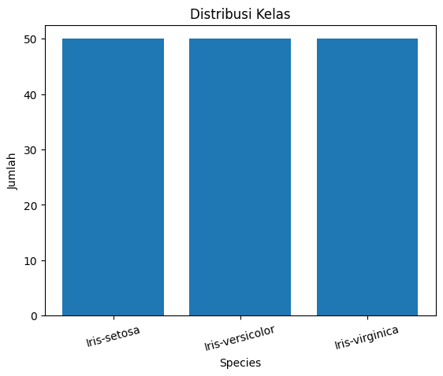
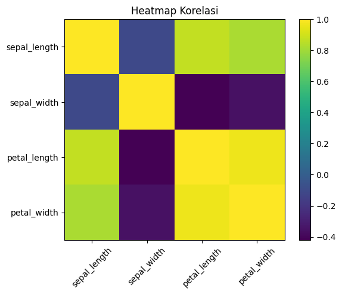

LAPORAN EKSPLORASI DATASET IRIS#
Pendahuluan#
Dataset Iris merupakan dataset klasik dalam analisis data dan machine learning. Dataset ini berisi pengukuran morfologi bunga iris berdasarkan:
Sepal Length
Sepal Width
Petal Length
Petal Width
Dengan 3 spesies:
Iris-setosa
Iris-versicolor
Iris-virginica
1. Memahami struktur dan karakteristik data
2. Mengidentifikasi missing value
3. Menganalisis distribusi kelas
4. Mengamati pola statistik deskriptif
5. Mengidentifikasi korelasi antar variabel
6. Mendeteksi outlier
import pandas as pd
import numpy as np
import matplotlib.pyplot as plt
# Load dataset (sesuaikan jika perlu)
df = pd.read_csv("IRIS.csv")
print("Ukuran Dataset:", df.shape)
df.head()
Ukuran Dataset: (150, 5)
| sepal_length | sepal_width | petal_length | petal_width | species | |
|---|---|---|---|---|---|
| 0 | 5.1 | 3.5 | 1.4 | 0.2 | Iris-setosa |
| 1 | 4.9 | 3.0 | 1.4 | 0.2 | Iris-setosa |
| 2 | 4.7 | 3.2 | 1.3 | 0.2 | Iris-setosa |
| 3 | 4.6 | 3.1 | 1.5 | 0.2 | Iris-setosa |
| 4 | 5.0 | 3.6 | 1.4 | 0.2 | Iris-setosa |
1. Struktur Data#
Pada tahap ini dilakukan pemeriksaan:
Jumlah baris dan kolom
Tipe data masing-masing variabel
Kelengkapan data (non-null count)
Tujuannya untuk memastikan dataset siap dianalisis.
df.info()
<class 'pandas.DataFrame'>
RangeIndex: 150 entries, 0 to 149
Data columns (total 5 columns):
# Column Non-Null Count Dtype
--- ------ -------------- -----
0 sepal_length 150 non-null float64
1 sepal_width 150 non-null float64
2 petal_length 150 non-null float64
3 petal_width 150 non-null float64
4 species 150 non-null str
dtypes: float64(4), str(1)
memory usage: 6.0 KB
Interpretasi:#
Dataset terdiri dari 150 baris dan 5 kolom.
Empat variabel bertipe numerik (float).
Satu variabel bertipe kategorikal (species).
Seluruh kolom memiliki 150 nilai non-null.
Artinya dataset lengkap dan tidak ada data kosong.
2. Pemeriksaan Missing Value#
Missing value dapat mempengaruhi hasil analisis dan model machine learning. Oleh karena itu perlu dilakukan pengecekan pada setiap kolom.
missing = df.isnull().sum()
missing_pct = (missing / len(df) * 100).round(2)
pd.DataFrame({
"Missing Count": missing,
"Missing (%)": missing_pct
})
| Missing Count | Missing (%) | |
|---|---|---|
| sepal_length | 0 | 0.0 |
| sepal_width | 0 | 0.0 |
| petal_length | 0 | 0.0 |
| petal_width | 0 | 0.0 |
| species | 0 | 0.0 |
Interpretasi:#
Tidak ditemukan missing value pada seluruh variabel. Dataset dalam kondisi bersih dan tidak memerlukan proses imputasi data.
3. Distribusi Kelas#
Distribusi kelas penting untuk mengetahui apakah dataset seimbang atau mengalami class imbalance.
class_dist = df["species"].value_counts()
class_pct = (class_dist / len(df) * 100).round(2)
pd.DataFrame({
"Jumlah": class_dist,
"Persentase (%)": class_pct
})
| Jumlah | Persentase (%) | |
|---|---|---|
| species | ||
| Iris-setosa | 50 | 33.33 |
| Iris-versicolor | 50 | 33.33 |
| Iris-virginica | 50 | 33.33 |
Interpretasi:#
Setiap spesies memiliki 50 data.
Persentase masing-masing kelas adalah 33.33%.
Dataset termasuk balanced dataset.
Kondisi ini sangat baik untuk analisis klasifikasi karena tidak memerlukan teknik penyeimbangan data.
plt.figure()
plt.bar(class_dist.index, class_dist.values)
plt.title("Distribusi Kelas")
plt.xlabel("Species")
plt.ylabel("Jumlah")
plt.xticks(rotation=15)
plt.show()

4. Statistik Deskriptif#
Statistik deskriptif memberikan informasi mengenai:
Mean (rata-rata)
Standar deviasi
Nilai minimum
Kuartil (Q1, Median, Q3)
Nilai maksimum
Hal ini membantu memahami penyebaran dan variasi data.
df.describe()
| sepal_length | sepal_width | petal_length | petal_width | |
|---|---|---|---|---|
| count | 150.000000 | 150.000000 | 150.000000 | 150.000000 |
| mean | 5.843333 | 3.054000 | 3.758667 | 1.198667 |
| std | 0.828066 | 0.433594 | 1.764420 | 0.763161 |
| min | 4.300000 | 2.000000 | 1.000000 | 0.100000 |
| 25% | 5.100000 | 2.800000 | 1.600000 | 0.300000 |
| 50% | 5.800000 | 3.000000 | 4.350000 | 1.300000 |
| 75% | 6.400000 | 3.300000 | 5.100000 | 1.800000 |
| max | 7.900000 | 4.400000 | 6.900000 | 2.500000 |
Interpretasi:#
Variabel petal_length dan petal_width memiliki standar deviasi terbesar.
Ini menunjukkan variasi terbesar terdapat pada ukuran petal.
Nilai mean dan median relatif berdekatan, menunjukkan distribusi cukup simetris.
Rentang nilai petal lebih besar dibanding sepal.
Petal kemungkinan besar menjadi variabel yang paling kuat dalam membedakan spesies.
5. Korelasi Antar Variabel#
Korelasi digunakan untuk melihat hubungan linear antar variabel numerik. Nilai korelasi berkisar antara -1 hingga +1.
corr = df.corr(numeric_only=True)
corr
| sepal_length | sepal_width | petal_length | petal_width | |
|---|---|---|---|---|
| sepal_length | 1.000000 | -0.109369 | 0.871754 | 0.817954 |
| sepal_width | -0.109369 | 1.000000 | -0.420516 | -0.356544 |
| petal_length | 0.871754 | -0.420516 | 1.000000 | 0.962757 |
| petal_width | 0.817954 | -0.356544 | 0.962757 | 1.000000 |
plt.figure()
plt.imshow(corr.values)
plt.title("Heatmap Korelasi")
plt.xticks(range(len(corr.columns)), corr.columns, rotation=45)
plt.yticks(range(len(corr.columns)), corr.columns)
plt.colorbar()
plt.show()

Interpretasi:#
Petal Length dan Petal Width memiliki korelasi positif yang sangat kuat.
Sepal Width memiliki korelasi yang lebih lemah dengan variabel lainnya.
Korelasi tinggi menunjukkan kemungkinan multikolinearitas jika digunakan dalam model regresi.
Variabel petal sangat informatif untuk klasifikasi spesies.
6. Identifikasi Outlier (Metode IQR)#
Outlier dideteksi menggunakan metode Interquartile Range (IQR):
IQR = Q3 - Q1
Batas bawah = Q1 - 1.5 × IQR
Batas atas = Q3 + 1.5 × IQR
Data di luar batas tersebut dianggap outlier.
def detect_outliers_iqr(data):
Q1 = data.quantile(0.25)
Q3 = data.quantile(0.75)
IQR = Q3 - Q1
lower = Q1 - 1.5 * IQR
upper = Q3 + 1.5 * IQR
outliers = ((data < lower) | (data > upper)).sum()
return lower, upper, outliers
numerical_cols = df.select_dtypes(include=np.number).columns
outlier_summary = []
for col in numerical_cols:
lb, ub, out_count = detect_outliers_iqr(df[col])
outlier_summary.append([col, lb, ub, out_count])
pd.DataFrame(outlier_summary,
columns=["Feature", "Lower Bound", "Upper Bound", "Jumlah Outlier"])
| Feature | Lower Bound | Upper Bound | Jumlah Outlier | |
|---|---|---|---|---|
| 0 | sepal_length | 3.15 | 8.35 | 0 |
| 1 | sepal_width | 2.05 | 4.05 | 4 |
| 2 | petal_length | -3.65 | 10.35 | 0 |
| 3 | petal_width | -1.95 | 4.05 | 0 |
Interpretasi:#
Dataset Iris umumnya memiliki sangat sedikit outlier.
Outlier yang muncul masih dalam batas biologis wajar.
Tidak terdapat outlier ekstrem yang dapat mengganggu analisis.
Dataset relatif stabil dan bersih.